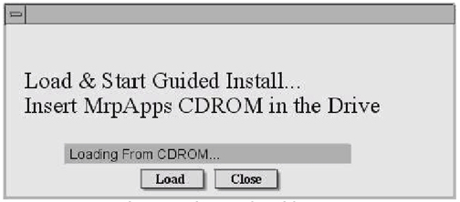
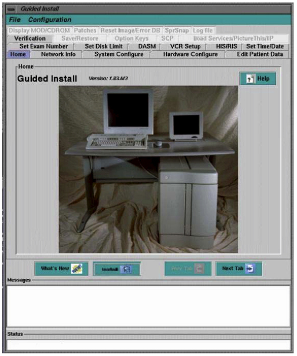
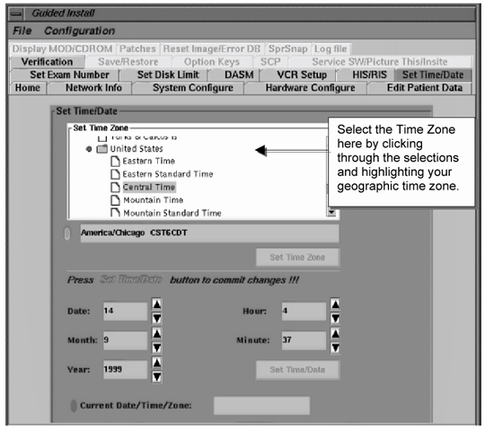
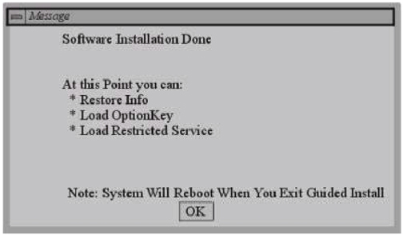
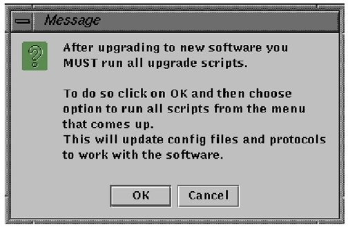
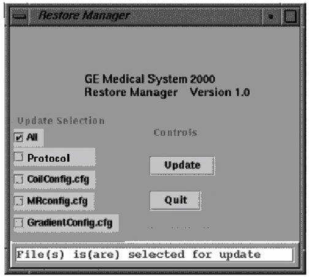
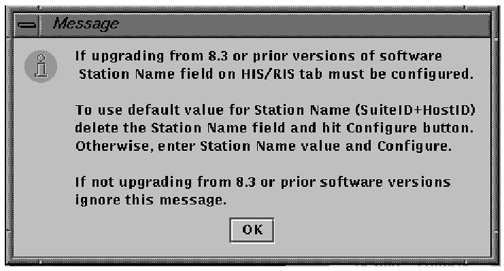
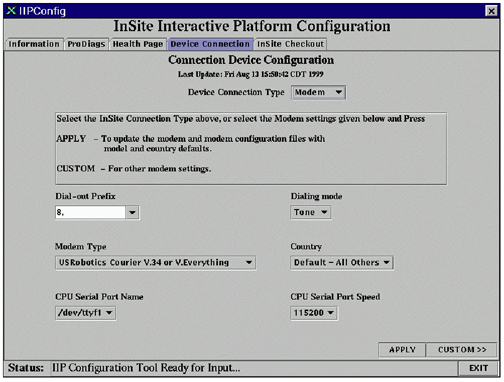

Operating Documentation
Direction 5133330-3, Rev# 14
Signa EXCITE HD 3.0T Service Methods
Module Version 1.0, Version Date 5/15/07
Operating Documentation |
| Required Persons | Preliminary Reqs | Procedure | Finalization |
|---|---|---|---|
| 1 | Not Applicable | 45 mins | Not Applicable |
When the system is finished rebooting, log in as root. There is no password at this time. You will first see a startup box that will asks for the MrpApps CDROM. See Illustration 1.
Illustration 1: GUIDED INSTALL LOAD SCREEN

Remove any CD from the CDROM drive and insert the MrpApps CDROM into the CDROM drive. Wait 20 seconds or until the amber light on the CDROM drive stops blinking and push the [Load] button. The Guided Install will load and start.
| NOTE: | Help documentation is built into the Guided Install GUI. Push the [Help] button on the tab you need information for in the GUI. When the GUI first starts, press the [What’s New] button for information on using the GUI. |
On initial startup, a popup box will appear over the Guided Install interface describing the tool and its use. After reading the information push the <OK> button to continue.
Next, a popup box (see Illustration 2) will appear over the Guided Install interface.
Illustration 2: INSTALL CONFIGURATION POPUP SCREEN

If you are reloading software, insert the SaveInfo MOD (created in Section 4-5,Save GI Configurations) then push the <OK> button to reinstall your last GUI install configuration values. (The normal SaveInfo files are not restored at this point in the software load. They will be restored in step 9.) You will verify the correct values were restored by checking each tab in the next step.
If you did not perform Save GI, push the <Cancel> button to continue manually with the install.
| ||||
| The last Install GUI configuration can only be installed if it was previously saved using the <Save GI Configuration to MOD> option per Save GI Configurations in section 4.5 in the main Load From Cold Module | ||||
The Guided Install home screen is displayed. See Illustration 3.
Illustration 3: GUIDED INSTALL - HOME SCREEN

Press the <Next Tab> button to move through active tabs from “Network Info” to “Set Time/Data”. Fill out all empty entries or make any updates as appropriate. This information should have been saved in Table 1 of the beging module. When you reach the “Set Time/Date” tab, go to the “Set Time Zone” box and use the selections to set the time zone your system is in. See Illustration 4.
Illustration 4: GUIDED INSTALL - SET TIME/DATE SCREEN

| ||||
| If the site will be using the “YP” networking option, do not turn YP on until after the InSite IIP option has been configured and checked out. If YP is turned on first, it will cause the InSite checkout to fail. | ||||
Proceed to the Verification tab. Once in the Verification tab, look at the pass or fail status of the entries. If any entry has a failed status, the <Install Software> button will not be active. Failed entries will be due to missing entries, or entries not in the correct format. Go to the tab with the error and correct it, then push the <Install> button to open the Verification tab again. If all entries pass verification at this point, push the <Install Software> button again to begin the MR Apps load. The MR Apps load will take 20-30 minutes, depending on the machine being loaded.
| NOTE: | It is not necessary that any one tab be filled out in any particular order. Just all required configuration tabs must be filled in or the install will not continue. The Verification Tab will list any formatting errors as well as current settings. See Illustration 5 for an example of a failure in the Verification Tab in networking (in the example, the Host IP Address is an incorrect format). This verification is not as complete as the Service Desktop Browser configuration verification. |
Illustration 5: GUIDED INSTALL - VERIFICATION SCREEN

Once the MR Apps load is done, the popup in Illustration 6 is displayed. Push the <OK> button to close the popup.
Illustration 6: GUIDED INSTALL - SW DONE SCREEN

At this point the GUI will change from the Install phase to the Configure phase. If a SaveInfo info MOD is available for this site, proceed to the Save/Restore tab and select [Restore Information]. If no SaveInfo MOD is available, go to each tab in the Install GUI and fill in or update all system information manually. A help button is available on each tab, which will open a popup box with information on the required data and its format for that page.
When the RestoreInfo is finished a popup will open telling the installer that upgrade scripts must be run. See Illustration 7.
Illustration 7: GUIDED INSTALL - UPGRADE SCRIPTS MESSAGE

Push the <OK> to continue. The Restore Manager menu opens (see Illustration 8). Select [All] to update all of the config files.
Illustration 8: GUIDED INSTALL - RESTORE UTILITY

Click on [Update]. The system will restore the files and then prompt, “Update is complete”, click [Quit].
A logfile of changes are made by the Restore Manager and is stored at: /w/config/restore.log
The system will open a log file window and prompt for confirmation, choose [OK].
The following Message will appear. (See Illustration 9). If you are upgrading from 8.3, follow the instructions to restore the Edit Patient Data functionality. Then select [OK].
Illustration 9: 8.3 UPGRADE MESSAGE

If the site has Voxtool, Functool or Interactive Vascular Imaging options, go into the Guided Install GUI, select Option Keys tab and reload these options at this time from the original MOD’s as they are not saved with SaveInfo. If the site has new options to be installed, go into the Guided Install GUI, select Option Keys tab and load these options at this time from the original MOD’s. During an upgrade, loading these options now will allow customer generated protocols for any of these options to load later during RestoreInfo.
If a SaveInfo info MOD is available for this site, proceed to the Save/Restore tab and select [Restore Site Protocols]. Restore the site protocols.
Once back on the Guided Install screen, use the cursor to select [File] and then [Quit] at the top left of the GUI. When the GUI shuts down, the system will reboot and all changes restored or made will be set.
After the system has finished rebooting, once again log in as root. Password is operator.
You will be asked, once entering the root desktop, if you want to start the Install GUI. Push the [Yes] button.
When the install GUI opens, go to the Load ServiceSW/Picture this/InSite tab and install service software. (Restricted Service Software is only available for GE use; Advanced Service Software is only available to sites with a valid Advanced Service Package Limited License.) GEMS Field Engineers loading GEMS Restricted Service Software should also configure InSite Interactive at this time (see Illustration 10). Follow the instructions given in popup windows as presented.
Illustration 10: CONFIGURE INSITE MENU

| NOTE: | The MR Restricted Service software must be loaded at this step or Signa will not boot. |
After service software installation, move through and check the accuracy of each tab. Insure all system options for the site are active.
| NOTE: | Release 8.3 version M4 and later software come with two software MOD keys that must always be reloaded. These two MOD’s (two sides on one MOD and one side on the other MOD to load) contain the LX Tools software that is shipped with every system. |
Turn YP on only if the site’s external network requires it. If YP is turned on, the system will take longer to boot (2 to 4 minutes). Be aware there is a small delay that may not be seen on other sites.
After information as been restored from MOD or changed in a tab, and configuration updates have been run, push the <Configure> button on the bottom of the tab to apply the configuration.
If the <Configure> button is not pushed to commit changes to a tab, or an error is present in a tab, a question mark will be seen on the tab, as shown in Illustration 11.
Illustration 11: CONFIGURATION PROBLEM EXAMPLE

Perform a SaveInfo to save the latest changes.
Exit the install GUI by selecting <File> then <Quit> from the top of the interface. If any error conditions still exist, you will be warned that no changes will be made. If no error conditions are found, the GUI will save user parameters.
Reconnect the Network Interface at this time if it was disconnected at the beginning of the install:
Log out of root and reboot the system.
Insure the system boots normally. If not recheck steps taken above and reload software if necessary.